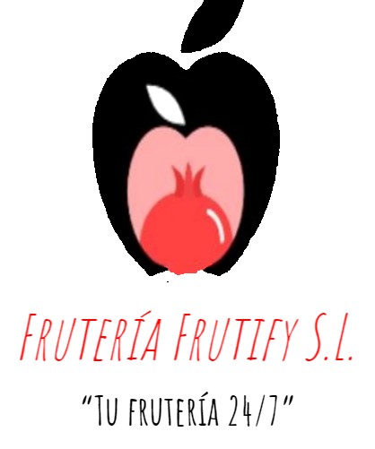

<!--AUTOR-->
<ion-card>
  <ion-title style="margin-top: 2%; margin-bottom: 2%; text-align: center;">Autor del proyecto</ion-title>
  
  <ion-card-header>
    <ion-card-title>Daniel García Campoy</ion-card-title>
    <ion-card-subtitle>{{ 'about.estudiante' | translate }}</ion-card-subtitle>
  </ion-card-header>
  <ion-card-content>
    <ion-icon name="location-outline" color="success"></ion-icon>CPFIP Campanillas Tech Park
  </ion-card-content>
  <ion-button href="https://github.com/DanielGarciaCampoy?tab=repositories" style="margin-left: 40%;"><ion-icon name="logo-github" ></ion-icon>Github</ion-button>
</ion-card>

<!--EMPRESA-->
<ion-card>
  <ion-title style="margin-top: 2%;margin-bottom: 1%; text-align: center;">EMPRESA</ion-title>
  
  <ion-card-header>
    <ion-card-title>Frutería Frutify S.L.</ion-card-title>
    <ion-card-subtitle>"Tu frutería 24/7"</ion-card-subtitle>
  </ion-card-header>
  <ion-card-content>
    <ion-icon name="location-outline" color="success"></ion-icon>Estepona
  </ion-card-content>
  <ion-card-content>
    <ion-icon name="call-sharp" color="success"></ion-icon>{{'app.contacta' | translate}}: edu-frutify@odoo.com
  </ion-card-content>
</ion-card>

